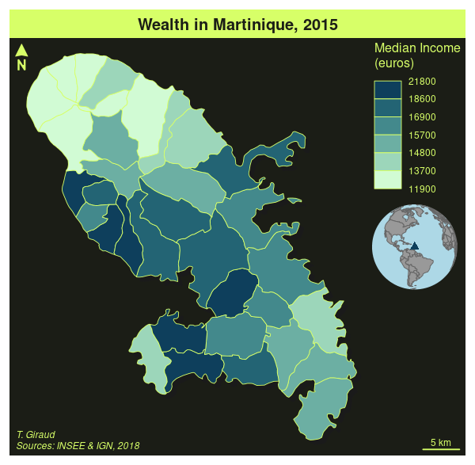

Main features
The type column indicates the value to use for the type argument in mf_map(x, var, type). The data column displays the relevant data types for each map types.

Create and integrate thematic maps in your R workflow. This package helps to design various cartographic representations such as proportional symbols, choropleth or typology maps. It also offers several functions to display layout elements that improve the graphic presentation of maps (e.g. scale bar, north arrow, title, labels). mapsf maps sf objects on base graphics.
You can install the released version of mapsf from CRAN with:
install.packages("mapsf")Alternatively, you can install the development version of mapsf from GitHub with:
remotes::install_github("riatelab/mapsf")This is a basic example which shows how to create a map with mapsf.
The main mapsf function is mf_map().
library(mapsf)
#> Le chargement a nécessité le package : sf
#> Linking to GEOS 3.7.1, GDAL 3.1.2, PROJ 7.1.0
# Import the sample dataset
mtq <- mf_get_mtq()
# Plot the base map
mf_map(x = mtq)
# Plot proportional symbols
mf_map(x = mtq, var = "POP", type = "prop")
# Plot a map layout
mf_layout(title = "Population in Martinique",
credits = "T. Giraud; Sources: INSEE & IGN, 2018")
A more detailed example:
# Export a map figure with a theme and extra margins
mf_export(x = mtq, filename = "mtq.png", width = 600,
theme = "dark", expandBB = c(0,0,0,.3))
# Plot a shadow
mf_shadow(mtq, col = "grey10", add = TRUE)
# Plot a choropleth map
mf_map(x = mtq, var = "MED", type = "choro",
pal = "Dark Mint",
breaks = "quantile",
nbreaks = 6,
leg_title = "Median Income\n(euros)",
leg_val_rnd = -2,
add = TRUE)
# Start an inset map
mf_inset_on(x = "worldmap", pos = "right")
# Plot the position of the sample dataset on a worlmap
mf_worldmap(mtq, col = "#0E3F5C")
# Close the inset
mf_inset_off()
# Plot a title
mf_title("Wealth in Martinique, 2015")
# Plot credits
mf_credits("T. Giraud\nSources: INSEE & IGN, 2018")
# Plot a scale bar
mf_scale(size = 5)
# Plot a north arrow
mf_arrow('topleft')
dev.off()
Note that mapsf is, to a certain degree, compatible with the pipe syntax from either magrittr or base(>= 4.1.0):
mf_theme("candy")
mtq |>
mf_init(expandBB = c(0,0,0,.4)) |>
mf_map(add = TRUE) |>
mf_map(c("POP","STATUS"), "prop_typo")
mf_title("Population and Status")
library(magrittr)
mf_theme("agolalight")
mtq %>%
mf_map() %>%
mf_map(c("POP","MED"), "prop_choro")
mf_title("Population and Wealth")
The type column indicates the value to use for the type argument in mf_map(x, var, type). The data column displays the relevant data types for each map types.
mapsf is the successor of cartography. There are no plans for new features or enhancements in cartography, but basic maintenance and support will continue indefinitely. Existing projects that use cartography can safely continue to use cartography. New projects should use mapsf because it is friendlier, lighter and more robust.
See mapsf vignette to migrate from cartography to mapsf.
mapsf)One can contribute to the package through pull requests and report issues or ask questions here.
This project uses conventional commits and semantic versioning.